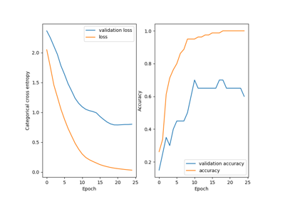

Deep learning
Deep learning with Attention
Recurrent networks for time series analysis
Recurrent networks for time series analysis
Bidirectional recurrent layers
Bidirectional recurrent layers



MNIST Image classification
Recurrent networks for time series analysis
Bidirectional recurrent layers